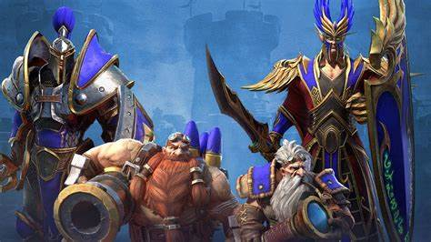

Впервые игра под названием Warcraft 3 увидела свет 20 лет назад в 2002 году. Как можно понять из названия данная игра является третьей в серии, а также является продолжением второй части.
Сюжет третьей части яаляется продолжением второй, однако, если в предыдущей сюжет был представлен бегущими буквами на экране, то в нынешней имеется полноценная анимация. Главным персонажем игры является принц Артас состоящий в священном ордене паладинов, однако в дальнейшем он переходит на сторону зла. Помимо него также имеются и другие интересные персонажи, которым судьба представляет пройти запутанный путь, вчерашние заклятые враги становятся союзниками ради выполнения общей цели.
В игре огромное количество самых различных рас существ, однако некоторые из них объеденены в союзы.
Расы в игре:
Warcraft 3 и по сей день остается одной из наиболее популярных игр в жанре Real time strategy, недавний выход Reforged только подогрел интерес к игре. На Youtube видео с данной игрой набирают десятки, а то и сотни тысяч просмотров. Существуют также профессиональные игроки, которые зарабатывают отличные деньги участвуя в турнирах. Warcraft 3 имеет свой собственный Сайт, в котором статьи об игре, а также новости об обновлениях.